Primera propuesta
Mediante esta propuesta de visualización, el usuario puede buscar profesores según la mención deseada, o bien buscar a un profesor específico. El propósito es visualizar con facilidad cuál es la probabilidad de aprobar título con uno u otro docente, considerando proporción entre guiades y titulades y notas obtenidas. Los distintos datos se representan mediante distintos tamaños, alturas, proporciones y colores. Al hacer click sobre uno de los items, se despliega un menú con información adicional
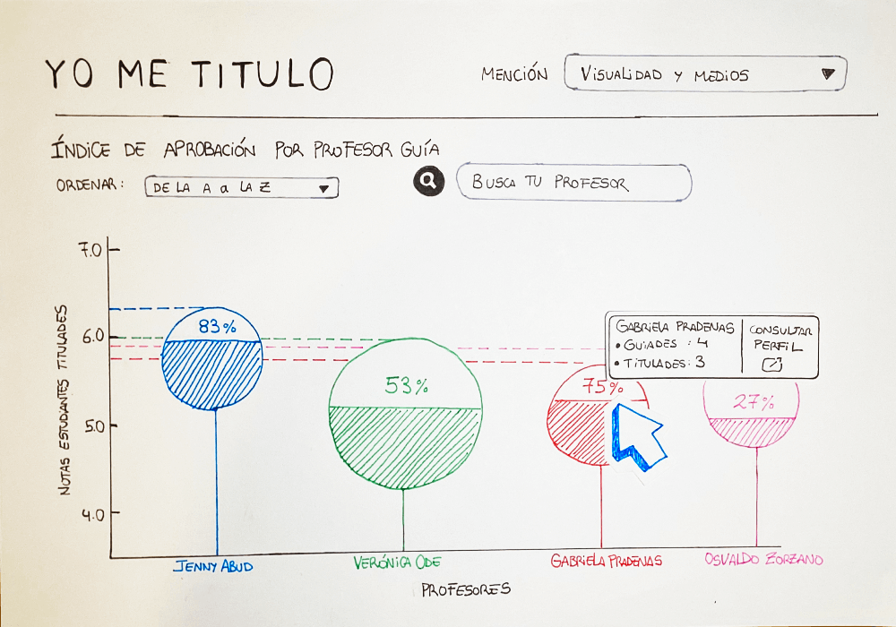
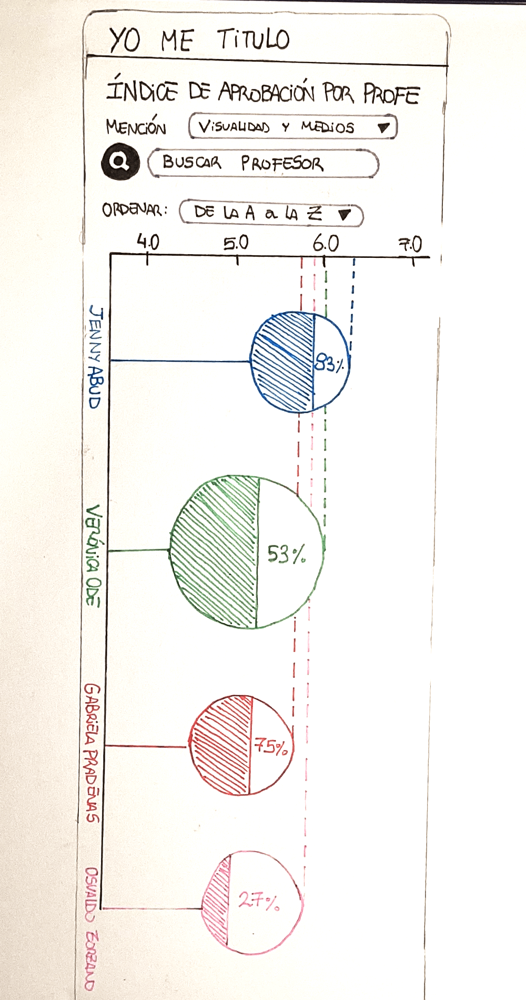
Segunda propuesta
En esta visualización, se puede analizar el proceso de título por cada docente, viendo así aquellos alumnos que reprobaron título, y también aquellos que aprobaron. De estos últimos, se puede observar qué tan altas fueron sus notas, en base a la saturación del color de cada círculo. Esta propuesta permite una rápida visualización del historial de cada profesor en título, para hacerse una idea preliminar respecto a la elección de profesor guia. En la versión para celulares, se puede arrastrar cada uno de los items de profesores para verlos de manera completa.
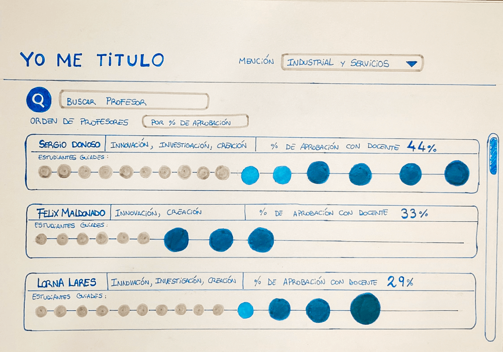
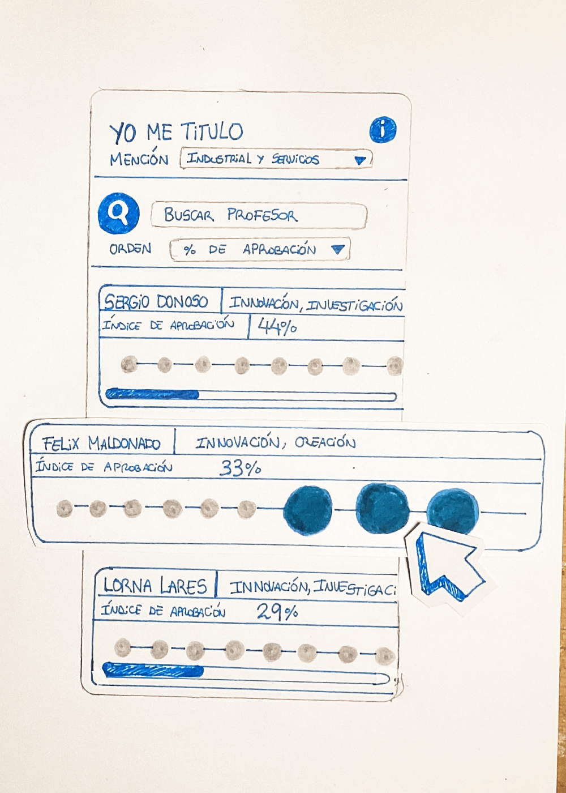
Tercera propuesta
Esta propuesta de visualización de datos busca resaltar el contraste entre los alumnos que fueron guiados por cada docente versus los que lograron titularse, esto representado por el ancho de cada figura que compone al círculo central y las figuras al interior de estas. Además, aquellos items con mayor porcentaje de éxito tienen una mayor saturación de color. La dinámica consiste en una rueda giratoria, dividida en tres secciones, una por cada mención con sus respectivas especificaciones. Esta rueda puede ser arrastrada, ya sea por mouse o táctil, para mostrar las demás menciones.
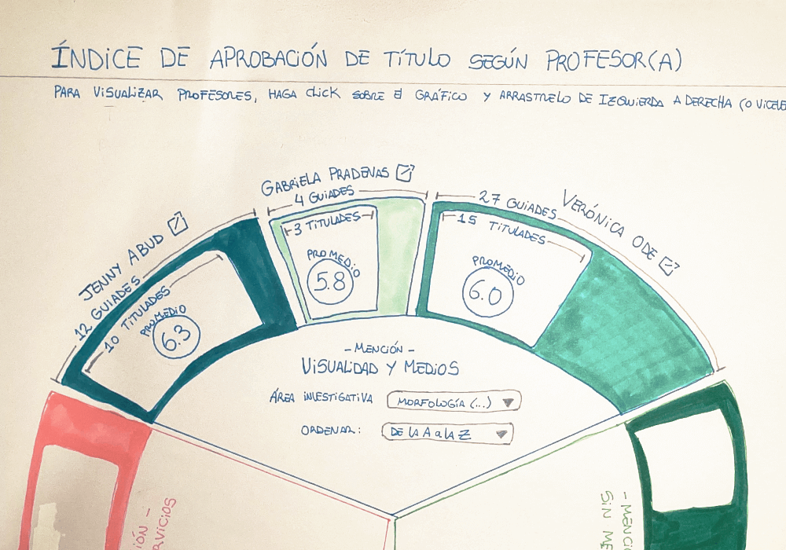
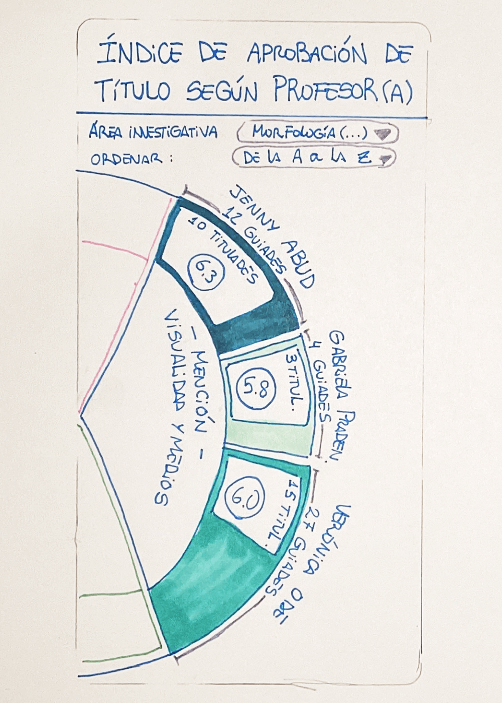
Cuarta propuesta
El objetivo de esta visualización es la posibilidad de comparar entre varias opciones de profesores, según criterios aplicados por el usuario. La visualización mostrará los tres profesores que se adapten mejor a las necesidades del usuario, dispuestos entre un 1er, 2do y 3er lugar. Además proveerá de información adicional sobre estos, como el perfil del docente, y las memorias de título para las que fue guia.
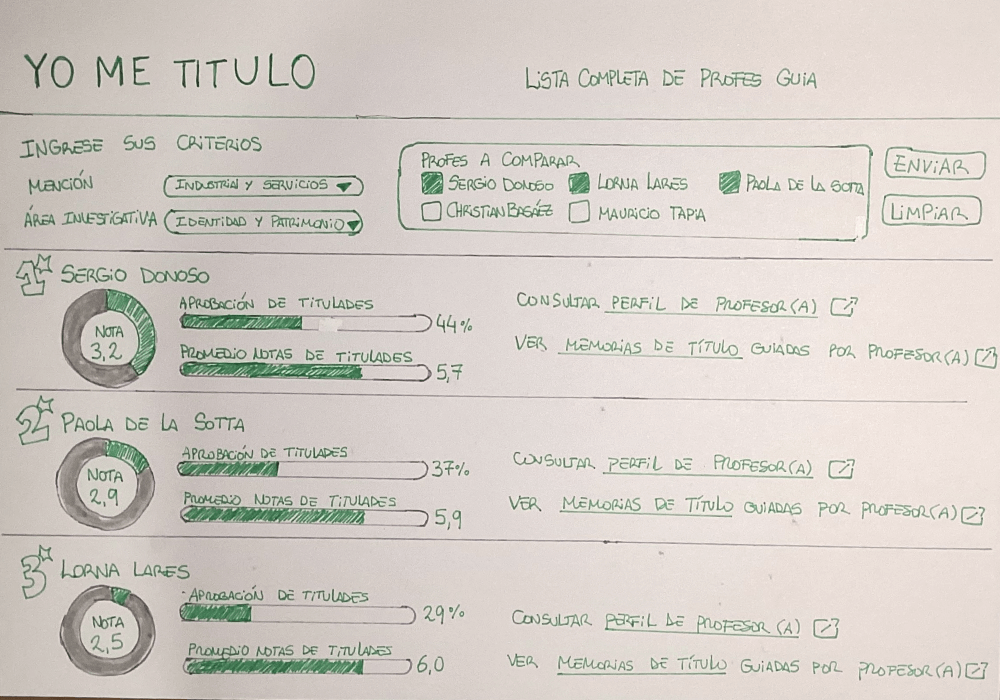
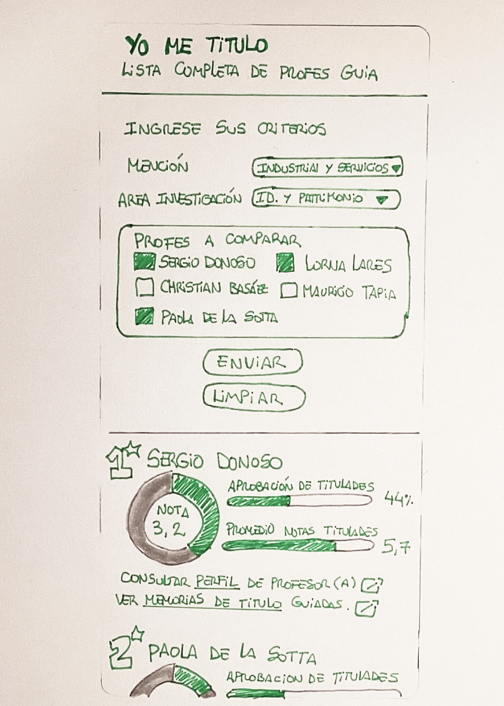
Quinta propuesta
Esta propuesta busca ser más interactiva con el usuario, inspirada en los varios quizzes de internet para averiguar a qué personaje te pareces, llega el quiz definitivo para averiguar a qué profesor te pareces. Con esta propuesta, el usuario podrá encontrar al profesor que se adapte mejor a sus necesidades y obtendrá una breve contextualización de este.
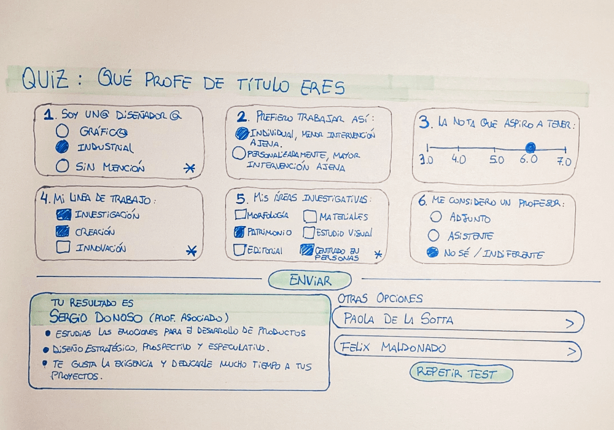
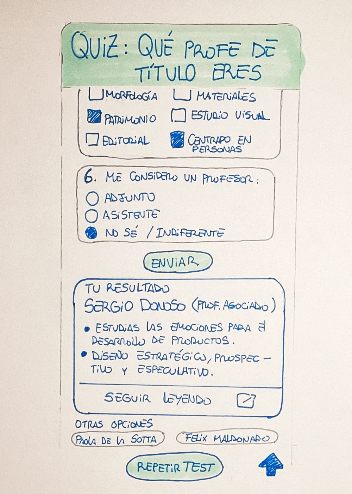
Sexta propuesta
Esta propuesta consiste en una comparativa entre varias opciones de profesores, en base a necesidades más específicas y técnicas. Luego de ingresar los datos requeridos acerca de las necesidades para título, se genera automáticamente un gráfico que muestra los profesores cuya descripción es más cercana a lo que el usuario busca. Adicionalmente ofrece información del docente número 1 en la lista.
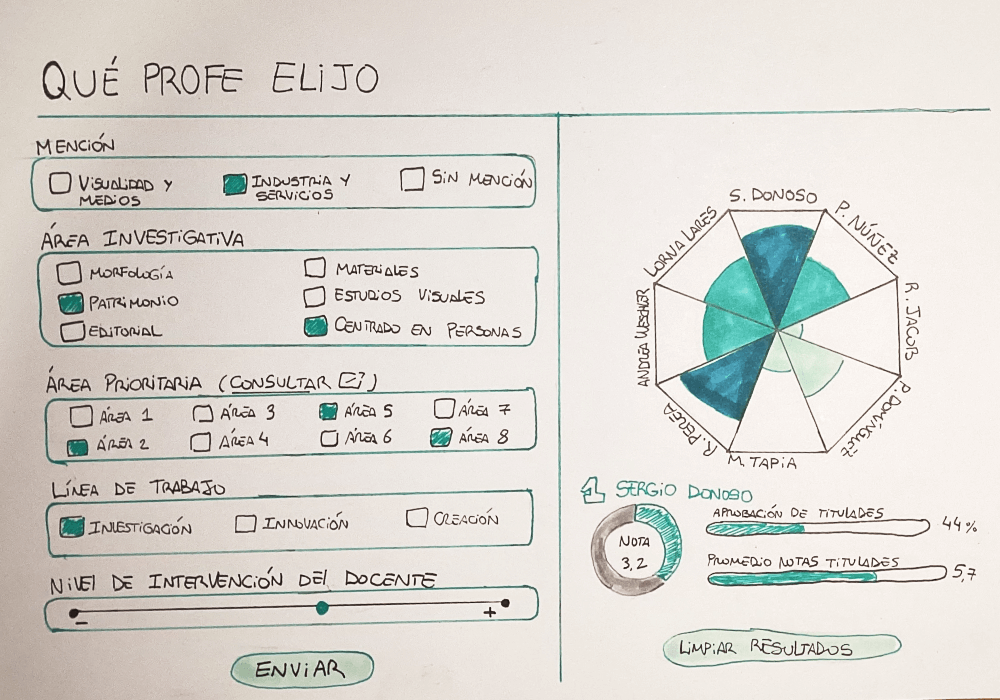
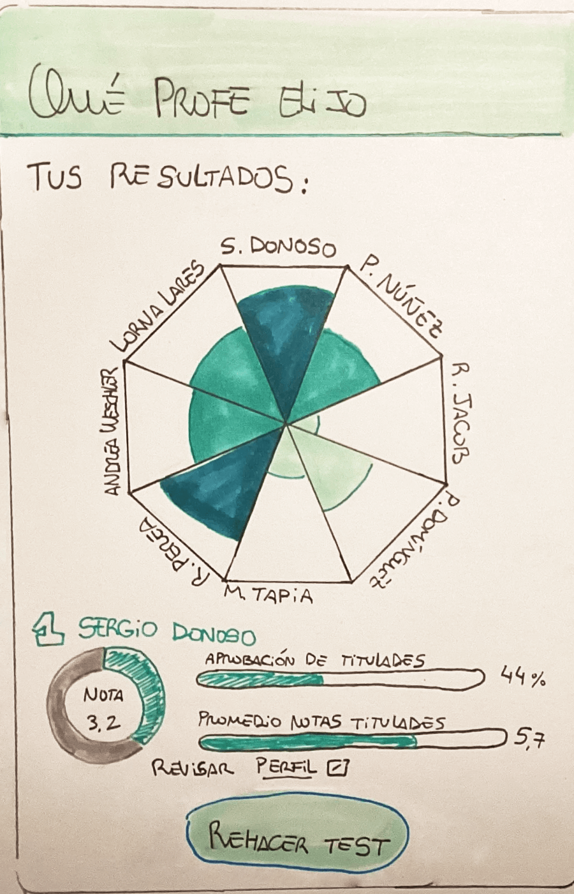